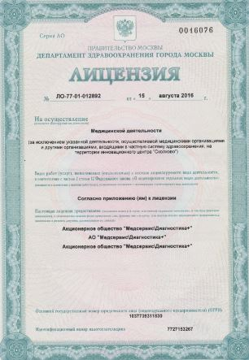

ПАНСИОН 24
Сеть пансионатов для пожилых людей высокого уровня обслуживания
+7 (495) 778-77-18
+7 (925) 504-88-83
Бесплатная консультация
Сеть пансионатов для пожилых людей высокого уровня обслуживания
1. "Пансион 24" - это сеть центров социальной реабилитации и восстановительного ухода для пожилых людей и инвалидов. У нас четыре комфортабельных пансионата в Москве и ближайшем Подмосковье, которые обеспечены всем необходимым для реабилитации, восстановления здоровья и спокойного отдыха пожилых людей.

2. Наши специалисты оказывают широкий спектр медико-социальных услуг по профессиональному уходу и социальной адаптации старшего поколения и лиц, с ограниченными возможностями.
3. Компания "Пансион 24" имеет медицинскую лицензию на предоставление услуг.

4. Успешно ведем социально-предпринимательскую работу с 2015 года.
5. "Пансион 24" активно принимает участие в благотворительной деятельности в сфере помощи пенсионерам, инвалидам и способствует развитию паллиативной помощи.
6. Наша компания - участник Ассоциации "Здоровье старшего поколения".
ЗАБОТА О СТАРШЕМ ПОКОЛЕНИИ. Мы стремимся к тому, чтобы обеспечить пожилым людям и лицам, с ограниченными возможностями достойную и полноценную жизнь!
ПОМОЩЬ СЕМЬЯМ. Мы помогаем семьям пожилых людей, снимая целый комплекс проблем и бытовых забот, которые возникают в связи с уходом за пожилыми людьми, после перенесенных заболеваний и травм, чтобы оставить время для приятного общения в кругу семьи, сохранить теплые отношения между старшим и младшим поколением.
Мы работаем с 2015 года в сфере гериатрической помощи и профессионального ухода за лежачими больными и инвалидами.
Более 1000 семей доверили нам самое дорогое - заботу о здоровье их близких.
На сегодняшний день, наша компания имеет ряд успешно развивающихся проектов, среди них - 4 загородных центра социальной реабилитации и восстановительного ухода (пансионата для пожилых людей и инвалидов).
Совместно с клинической диагностической лабораторией "Медсервис Диагностика +", мы предоставляем для наших клиентов широкий спектр услуг по проведению анализов и клинических исследований.
Удобный порядок получения результатов анализов и услуга выезда медицинского персонала на дом, помогают значительно сберечь время и силы, если нет возможности пожилым людям или малоподвижным пациентам, по состоянию здоровья посетить центр.
Персонал (сиделки и медицинские сестры) имеют медицинское образование и большой опыт работы с гериатрическими пациентами.
Коллектив предоставляет качественную и своевременную помощь всем желающим, не зависимо от степени самостоятельности подопечного.
1. Ежедневный мониторинг здоровья.
2. Контроль за приемом лекарств.
3. Профессиональный уход за лежачими больными (обрабатывание пролежней, гигиенические процедуры, специальное диетическое питание по показаниям здоровья и т.д.).
Сотрудничаем с медицинскими федеральными центрами и врачами и специалистами, которые специализируются на гериатрических заболеваниях. Для наших клиентов существует возможность консультации с психологами.
СОЦИАЛЬНАЯ АДАПТАЦИЯ. Наш дом престарелых уделяет максимальное внимание процессу адаптации наших подопечных, ведь от этого зависит все последующее пребывание в пансионах. Психологами проводятся ряд разнообразных тестов, которые помогают выявить предпочтение каждого клиента.
АНИМАЦИОННЫЕ ЗАНЯТИЯ. Даже для лежачих подопечных проводятся ряд развлекательных и ежедневных мероприятий. С ними работают аниматоры, они рисуют, занимаются пальчиковой гимнастикой, смотрят фильмы и слушают музыку.
ДУХОВНАЯ СФЕРА. Также у пенсионеров есть возможность духовного общения с настоятелями воскресной школы.
ОБЩЕНИЕ С БЛИЗКИМИ. В любой момент у вас есть возможность пообщаться с родными по средствам программы Skype и интернета.
1. Наши пансионаты расположены в Москве и ближайшем Подмосковье.
2. Максимально простая процедура оформления.
3. Наш персонал берет на себя решение всех необходимых вопросов, связанных с поселением, лечением и бытовыми необходимостями пожилых людей. Доверяя нам родного человека, можете быть спокойны о его безопасности и уверенны в том, что он в надежных руках и теплой атмосфере.
Видеонаблюдение, система безопасности и контроля в "Пансион 24"
Когда пожилой человек, в силу жизненных обстоятельств и по состоянию здоровья переезжает в дом престарелых, близкие испытывают обеспокоенность по поводу его безопасности и защиты. В наших современных частных домах престарелых, в целях защиты, обеспечения безопасности и контроля качества работы с пожилыми людьми, используются самые новейшие технические средства и методы:
В "Независимой газете" вышла новая статья Жанны Каминской и Дмитрия Панина "Новый дом для папы" о нашем пансионате!
Как отдать родного человека в чужие руки и радоваться этому?Как бы человеку ни хотелось быть здоровым и бодрым и в старости, к сожалению, не всегда так бывает… Вот и в нашей семье так случилось, что наш общий папа, отец мужа, стал инвалидом после инсульта.